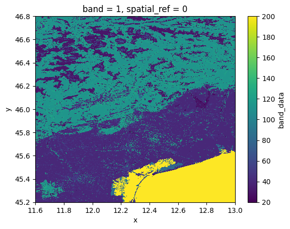
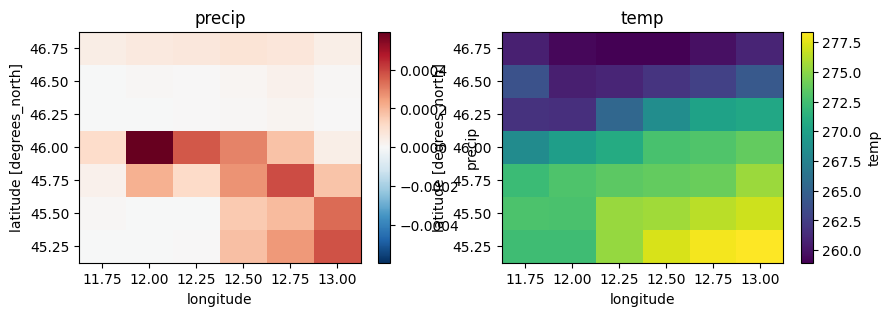
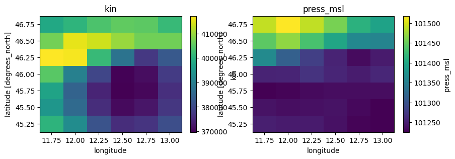
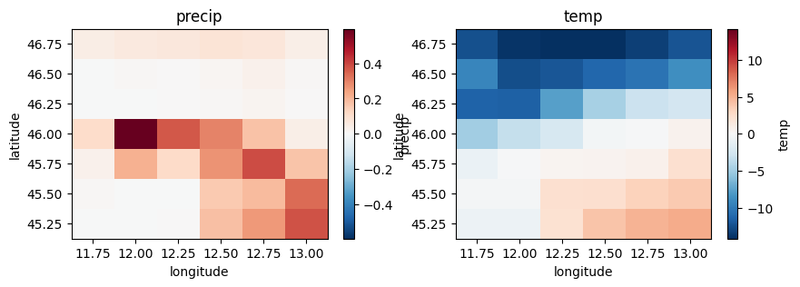
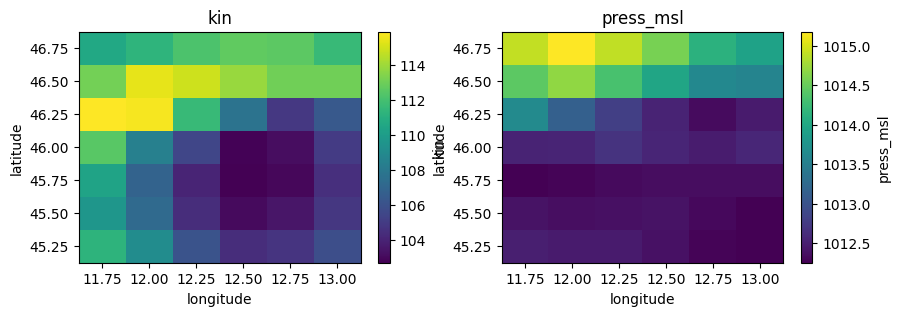
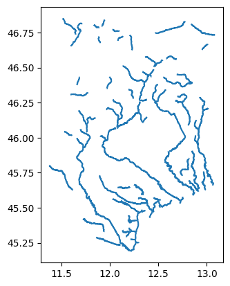

Tip
Example: Preparing a data catalog#
This example illustrates the how to prepare your own HydroMT DataCatalog to reference your own data sources and start using then within HydroMT, see user guide.
[1]:
# import python libraries
import os
from pprint import pprint
import geopandas as gpd
import matplotlib.pyplot as plt
import pandas as pd
import rioxarray # noqa
import xarray as xr
import hydromt
The steps to use your own data within HydroMT are in brief:
Have your (local) dataset ready in one of the supported raster (tif, ascii, netcdf, zarr…), vector (shp, geojson, gpkg…) or geospatial time-series (netcdf, csv…) format.
Create your own yaml file with a reference to your prepared dataset and properties (path, data_type, driver, etc.) following the HydroMT data conventions. For this step, you can also start from an existing pre-defined catalog or use it for inspiration.
The existing pre-defined catalog are:
[2]:
# this download the artifact_data archive v1.0.0
data_catalog = hydromt.DataCatalog(data_libs=["artifact_data=v1.0.0"])
pprint(data_catalog.predefined_catalogs)
{'artifact_data': <hydromt.data_catalog.predefined_catalog.ArtifactDataCatalog object at 0x7f69a222f650>,
'aws_data': <hydromt.data_catalog.predefined_catalog.AWSDataCatalog object at 0x7f69a1f3eb10>,
'deltares_data': <hydromt.data_catalog.predefined_catalog.DeltaresDataCatalog object at 0x7f699d70ded0>,
'gcs_cmip6_data': <hydromt.data_catalog.predefined_catalog.GCSCMIP6DataCatalog object at 0x7f699c6de550>}
In this notebook, we will see how we can create a data catalog for several type of input data. For this we have prepared several type of data that we will catalogue, let’s see which data we have available:
[3]:
# the artifact data is stored in the following location
root = os.path.join(data_catalog._cache_dir, "artifact_data", "v1.0.0")
# let's print some of the file that are there
for item in os.listdir(root)[-10:]:
print(item)
modis_lai.nc
eobs.nc
hydro_lakes.gpkg
glw_ducks.tif
gdp_world.gpkg
mdt_cnes_cls18.tif
gswo.tif
corine.tif
gadm_level3.gpkg
glw_goats.tif
RasterDataset from raster file#
The first file we will use is a ‘simple’ raster file in a tif format: vito.tif. This file contains a landuse classification raster. The first thing to do before adding a new file to a data catalog is to get to know what is inside of our file mainly:
location of the file:
path.type of data:
data_type.RasterDatasetfor gridded data,GeoDataFramefor vector data,GeoDatasetfor point timeseries andDataFramefor tabular data.file format:
driver. The file format impacts the driver or python function that will be used to open the data. Eitherraster,raster_tindex,netcdf,zarr,vector,vector_table.crs:
crs. Coordinate sytem of the data. Optional as it is usually encoded in the data itself.variables and their properties:
rename,unit_mult,unit_add. Looking at the variables in the input data and what are their names and units so that we can convert them to the HydroMT data conventions.
There are more arguments or properties to look for that are explained in more detailed in the documentation. To discover our data we can either use GIS software like QGIS or GDAL or just use python directly to try and open the data.
Let’s open our vito.tif file with xarray and rioxarray:
[4]:
da = xr.open_dataarray(os.path.join(root, "vito.tif"))
pprint(da)
print(f"CRS: {da.raster.crs}")
da.plot()
<xarray.DataArray 'band_data' (band: 1, y: 1613, x: 1412)> Size: 9MB
[2277556 values with dtype=float32]
Coordinates:
* band (band) int64 8B 1
* x (x) float64 11kB 11.6 11.6 11.6 11.6 ... 13.0 13.0 13.0 13.0
* y (y) float64 13kB 46.8 46.8 46.8 46.8 ... 45.2 45.2 45.2 45.2
spatial_ref int64 8B ...
Attributes:
AREA_OR_POINT: Area
CRS: GEOGCS["WGS 84",DATUM["WGS_1984",SPHEROID["WGS 84",6378137,298.257223563,AUTHORITY["EPSG","7030"]],AUTHORITY["EPSG","6326"]],PRIMEM["Greenwich",0,AUTHORITY["EPSG","8901"]],UNIT["degree",0.0174532925199433,AUTHORITY["EPSG","9122"]],AXIS["Latitude",NORTH],AXIS["Longitude",EAST],AUTHORITY["EPSG","4326"]]
[4]:
<matplotlib.collections.QuadMesh at 0x7f699c700790>

What we see is that we have a simple raster with landuse data in crs 4326. Let’s translate what we know into a data catalog.
[5]:
yml_str = f"""
meta:
roots:
- {root}
vito:
uri: vito.tif
data_type: RasterDataset
driver:
name: rasterio
metadata:
crs: 4326
"""
yaml_path = "tmpdir/vito.yml"
with open(yaml_path, mode="w") as f:
f.write(yml_str)
And let’s now see if HydroMT can properly read the file from the data catalog we prepared:
[6]:
data_catalog = hydromt.DataCatalog(data_libs=[yaml_path])
da = data_catalog.get_rasterdataset("vito")
da
[6]:
<xarray.DataArray 'vito' (y: 1613, x: 1412)> Size: 2MB
dask.array<getitem, shape=(1613, 1412), dtype=uint8, chunksize=(1613, 1412), chunktype=numpy.ndarray>
Coordinates:
* x (x) float64 11kB 11.6 11.6 11.6 11.6 ... 13.0 13.0 13.0 13.0
* y (y) float64 13kB 46.8 46.8 46.8 46.8 ... 45.2 45.2 45.2 45.2
spatial_ref int64 8B 0
Attributes:
AREA_OR_POINT: Area
_FillValue: 255
source_file: vito.tifRasterDataset from several raster files#
The second file we will add is the merit_hydro which consists of elevation and elevation-derived variables stored in several tif files for each variable. Let’s see what are their names.
[7]:
folder_name = os.path.join(root, "merit_hydro")
# let's see which files are there
for path, _, files in os.walk(folder_name):
print(path)
for name in files:
print(f" - {name}")
/home/runner/.hydromt/artifact_data/v1.0.0/merit_hydro
- flwdir.tif
- hnd.tif
- elevtn.tif
- basins.tif
- uparea.tif
- rivwth.tif
- strord.tif
- upgrid.tif
- lndslp.tif
We have here 9 files. When reading tif files, the name of the file is used as the variable name. HydroMT uses data conventions to ensure that certain variables should have the same name and units to be used in automatically in the workflows. For example elevation data should be called elevtn with unit in [m asl]. Check the data conventions and see if you need to rename or change units with unit_add and unit_mult for this dataset in
the data catalog.
Here all names and units are correct, so we just show an example were we rename the hnd variable.
[8]:
yml_str = f"""
meta:
roots:
- {root}
merit_hydro:
data_type: RasterDataset
driver:
name: rasterio
options:
chunks:
x: 6000
y: 6000
data_adapter:
rename:
hnd: height_above_nearest_drain
uri: merit_hydro/*.tif
"""
# overwrite data catalog
data_lib = "tmpdir/merit_hydro.yml"
with open(data_lib, mode="w") as f:
f.write(yml_str)
[9]:
data_catalog.from_yml(data_lib) # add a yaml file to the data catalog
print(data_catalog.sources.keys())
ds = data_catalog.get_rasterdataset("merit_hydro")
ds
dict_keys(['vito', 'merit_hydro'])
[9]:
<xarray.Dataset> Size: 97MB
Dimensions: (x: 1680, y: 1920)
Coordinates:
* x (x) float64 13kB 11.6 11.6 11.6 ... 13.0 13.0
* y (y) float64 15kB 46.8 46.8 46.8 ... 45.2 45.2
spatial_ref int64 8B 0
Data variables:
flwdir (y, x) uint8 3MB dask.array<chunksize=(1920, 1680), meta=np.ndarray>
elevtn (y, x) float32 13MB dask.array<chunksize=(1920, 1680), meta=np.ndarray>
lndslp (y, x) float32 13MB dask.array<chunksize=(1920, 1680), meta=np.ndarray>
basins (y, x) uint32 13MB dask.array<chunksize=(1920, 1680), meta=np.ndarray>
upgrid (y, x) int32 13MB dask.array<chunksize=(1920, 1680), meta=np.ndarray>
height_above_nearest_drain (y, x) float32 13MB dask.array<chunksize=(1920, 1680), meta=np.ndarray>
rivwth (y, x) float32 13MB dask.array<chunksize=(1920, 1680), meta=np.ndarray>
uparea (y, x) float32 13MB dask.array<chunksize=(1920, 1680), meta=np.ndarray>
strord (y, x) uint8 3MB dask.array<chunksize=(1920, 1680), meta=np.ndarray>In the path, the filenames can be further specified with {variable}, {year} and {month} keys to limit which files are being read based on the get_data request in the form of “path/to/my/files/{variable}{year}{month}.nc”.
Let’s see how this works:
[10]:
# NOTE: the double curly brackets will be printed as single brackets in the text file
yml_str = f"""
meta:
roots:
- {root}
merit_hydro:
data_type: RasterDataset
driver:
name: rasterio
options:
chunks:
x: 6000
y: 6000
data_adapter:
rename:
hnd: height_above_nearest_drain
uri: merit_hydro/{{variable}}.tif
"""
# overwrite data catalog
data_lib = "tmpdir/merit_hydro.yml"
with open(data_lib, mode="w") as f:
f.write(yml_str)
[11]:
data_catalog.from_yml(data_lib) # add a yaml file to the data catalog
print(data_catalog.sources.keys())
ds = data_catalog.get_rasterdataset(
"merit_hydro", variables=["height_above_nearest_drain", "elevtn"]
)
ds
overwriting data source 'merit_hydro' with provider file and version _UNSPECIFIED_.
dict_keys(['vito', 'merit_hydro'])
[11]:
<xarray.Dataset> Size: 26MB
Dimensions: (y: 1920, x: 1680)
Coordinates:
* x (x) float64 13kB 11.6 11.6 11.6 ... 13.0 13.0
* y (y) float64 15kB 46.8 46.8 46.8 ... 45.2 45.2
spatial_ref int64 8B 0
Data variables:
height_above_nearest_drain (y, x) float32 13MB dask.array<chunksize=(1920, 1680), meta=np.ndarray>
elevtn (y, x) float32 13MB dask.array<chunksize=(1920, 1680), meta=np.ndarray>RasterDataset from a netcdf file#
The last RasterDataset file we will add is the era5.nc which consists of climate variables stored in a netcdf file. Let’s open this file with xarray.
[12]:
ds = xr.open_dataset(os.path.join(root, "era5.nc"))
pprint(ds)
<xarray.Dataset> Size: 17kB
Dimensions: (time: 14, latitude: 7, longitude: 6)
Coordinates:
* time (time) datetime64[ns] 112B 2010-02-01 2010-02-02 ... 2010-02-14
* longitude (longitude) float32 24B 11.75 12.0 12.25 12.5 12.75 13.0
* latitude (latitude) float32 28B 46.75 46.5 46.25 46.0 45.75 45.5 45.25
spatial_ref int32 4B ...
Data variables:
precip (time, latitude, longitude) float32 2kB ...
temp (time, latitude, longitude) float32 2kB ...
press_msl (time, latitude, longitude) float32 2kB ...
kin (time, latitude, longitude) float32 2kB ...
kout (time, latitude, longitude) float32 2kB ...
temp_min (time, latitude, longitude) float32 2kB ...
temp_max (time, latitude, longitude) float32 2kB ...
Attributes:
category: meteo
history: Extracted from Copernicus Climate Data Store; resampled ...
paper_doi: 10.1002/qj.3803
paper_ref: Hersbach et al. (2019)
source_license: https://cds.climate.copernicus.eu/cdsapp/#!/terms/licenc...
source_url: https://doi.org/10.24381/cds.bd0915c6
source_version: ERA5 daily data on pressure levels
[13]:
# Select first timestep
ds1 = ds.sel(time=ds.time[0])
ds1
# Plot
fig, axes = plt.subplots(nrows=1, ncols=2, figsize=(10, 3))
ds1["precip"].plot(ax=axes[0])
axes[0].set_title("precip")
ds1["temp"].plot(ax=axes[1])
axes[1].set_title("temp")
fig, axes = plt.subplots(nrows=1, ncols=2, figsize=(10, 3))
ds1["kin"].plot(ax=axes[0])
axes[0].set_title("kin")
ds1["press_msl"].plot(ax=axes[1])
axes[1].set_title("press_msl")
[13]:
Text(0.5, 1.0, 'press_msl')


Checking the data conventions we see that all variables already have the right names but the units should be changed:
precip from m to mm
temp, temp_min, temp_max from K to C
kin, kout from J.m-2 to W.m-2
press_msl from Pa to hPa
Let’s change the units using unit_mult and unit_add:
[14]:
yml_str = f"""
meta:
roots:
- {root}
era5:
metadata:
crs: 4326
data_type: RasterDataset
driver:
name: raster_xarray
data_adapter:
unit_add:
temp: -273.15
temp_max: -273.15
temp_min: -273.15
time: 86400
unit_mult:
kin: 0.000277778
kout: 0.000277778
precip: 1000
press_msl: 0.01
uri: era5.nc
"""
# overwrite data catalog
data_lib = "tmpdir/era5.yml"
with open(data_lib, mode="w") as f:
f.write(yml_str)
And now open our dataset and check the units have been converted.
[15]:
data_catalog.from_yml(data_lib) # add a yaml file to the data catalog
print(data_catalog.sources.keys())
ds = data_catalog.get_rasterdataset("era5")
ds
dict_keys(['vito', 'merit_hydro', 'era5'])
[15]:
<xarray.Dataset> Size: 17kB
Dimensions: (time: 14, latitude: 7, longitude: 6)
Coordinates:
* time (time) datetime64[ns] 112B 2010-02-02 2010-02-03 ... 2010-02-15
* longitude (longitude) float32 24B 11.75 12.0 12.25 12.5 12.75 13.0
* latitude (latitude) float32 28B 46.75 46.5 46.25 46.0 45.75 45.5 45.25
spatial_ref int32 4B ...
Data variables:
precip (time, latitude, longitude) float32 2kB dask.array<chunksize=(14, 7, 6), meta=np.ndarray>
temp (time, latitude, longitude) float32 2kB dask.array<chunksize=(14, 7, 6), meta=np.ndarray>
press_msl (time, latitude, longitude) float32 2kB dask.array<chunksize=(14, 7, 6), meta=np.ndarray>
kin (time, latitude, longitude) float32 2kB dask.array<chunksize=(14, 7, 6), meta=np.ndarray>
kout (time, latitude, longitude) float32 2kB dask.array<chunksize=(14, 7, 6), meta=np.ndarray>
temp_min (time, latitude, longitude) float32 2kB dask.array<chunksize=(14, 7, 6), meta=np.ndarray>
temp_max (time, latitude, longitude) float32 2kB dask.array<chunksize=(14, 7, 6), meta=np.ndarray>
Attributes:
category: meteo
history: Extracted from Copernicus Climate Data Store; resampled ...
paper_doi: 10.1002/qj.3803
paper_ref: Hersbach et al. (2019)
source_license: https://cds.climate.copernicus.eu/cdsapp/#!/terms/licenc...
source_url: https://doi.org/10.24381/cds.bd0915c6
source_version: ERA5 daily data on pressure levels
crs: 4326[16]:
# Select first timestep
ds1 = ds.sel(time=ds.time[0])
ds1
# Plot
fig, axes = plt.subplots(nrows=1, ncols=2, figsize=(10, 3))
ds1["precip"].plot(ax=axes[0])
axes[0].set_title("precip")
ds1["temp"].plot(ax=axes[1])
axes[1].set_title("temp")
fig, axes = plt.subplots(nrows=1, ncols=2, figsize=(10, 3))
ds1["kin"].plot(ax=axes[0])
axes[0].set_title("kin")
ds1["press_msl"].plot(ax=axes[1])
axes[1].set_title("press_msl")
[16]:
Text(0.5, 1.0, 'press_msl')


GeoDataFrame from a vector file#
Now we will see how to add vector data to the data catalogue based on rivers_lin2019_v1.gpkg. Vector files can be open in Python with geopandas (or you can use QGIS) to inspect the data.
[17]:
gdf = gpd.read_file(os.path.join(root, "rivers_lin2019_v1.gpkg"))
pprint(gdf.head())
print(f"Variables: {gdf.columns}")
print(f"CRS: {gdf.crs}")
gdf.plot()
COMID order area Sin Slp Elev K \
0 21002594 4.0 1788.131052 1.527056 0.000451 10.648936 3.020000e-11
1 21002602 4.0 1642.386086 1.733917 0.000225 15.861538 3.020000e-11
2 21002675 4.0 2041.630090 1.212651 0.000071 0.975904 3.020000e-11
3 21002937 2.0 258.144582 1.226202 0.000056 1.922830 3.020000e-11
4 21002680 4.0 1983.584528 1.225684 0.000076 1.892537 3.020000e-11
P AI LAI ... SLT Urb WTD HW \
0 0.0 0.795613 1.204846 ... 40.403226 46.983871 1.087777 2.501222
1 0.0 0.828527 1.327503 ... 42.454545 18.181818 4.564060 1.769275
2 0.0 0.662288 0.295892 ... 44.437500 11.250000 0.352534 1.354830
3 0.0 0.726821 1.181066 ... 43.711538 15.634615 1.570532 1.671508
4 0.0 0.719180 1.146002 ... 42.900000 18.900000 0.342745 1.487189
DOR QMEAN qbankfull rivwth width_DHG \
0 0.0 37.047185 190.390803 100.322630 99.347165
1 0.0 35.520306 204.668065 104.193306 103.004818
2 0.0 42.076385 175.181351 125.604490 95.296386
3 0.0 2.426403 23.421744 134.663120 34.845132
4 0.0 41.435879 208.770128 135.457180 104.031935
geometry
0 LINESTRING (11.93917 45.32833, 11.94 45.32917,...
1 LINESTRING (11.83 45.38917, 11.82917 45.38833,...
2 LINESTRING (12.21333 45.19333, 12.2125 45.1941...
3 LINESTRING (12.11 45.23417, 12.10917 45.23417,...
4 LINESTRING (12.1 45.27583, 12.1 45.27667, 12.1...
[5 rows x 22 columns]
Variables: Index(['COMID', 'order', 'area', 'Sin', 'Slp', 'Elev', 'K', 'P', 'AI', 'LAI',
'SND', 'CLY', 'SLT', 'Urb', 'WTD', 'HW', 'DOR', 'QMEAN', 'qbankfull',
'rivwth', 'width_DHG', 'geometry'],
dtype='object')
CRS: EPSG:4326
[17]:
<Axes: >

This data source contains rivers line including attributes that can be usefull to setup models such as river width, average discharge or bankfull discharge. Here it’s not needed but feel free to try out some renaming or unit conversion. The minimal data catalog input would be:
[18]:
yml_str = f"""
meta:
roots:
- {root}
rivers_lin:
data_type: GeoDataFrame
driver:
name: pyogrio
uri: rivers_lin2019_v1.gpkg
"""
# overwrite data catalog
data_lib = "tmpdir/rivers.yml"
with open(data_lib, mode="w") as f:
f.write(yml_str)
[19]:
data_catalog.from_yml(data_lib) # add a yaml file to the data catalog
print(data_catalog.sources.keys())
gdf = data_catalog.get_geodataframe("rivers_lin")
dict_keys(['vito', 'merit_hydro', 'era5', 'rivers_lin'])
GeoDataset from a netcdf file#
Now we will see how to add geodataset data to the data catalogue based on gtsmv3_eu_era5.nc. This geodataset file contains ocean water level timeseries at specific stations locations in netdcf format and can be opened in Python with xarray. In HydroMT we use a specific wrapper around xarray called GeoDataset to mark that this file contains geospatial timeseries, in this case point timeseries. But for now we can inspect it with xarray.
To learn more about GeoDataset type you can check the reading geodataset example.
[20]:
ds = xr.open_dataset(os.path.join(root, "gtsmv3_eu_era5.nc"))
ds
[20]:
<xarray.Dataset> Size: 323kB
Dimensions: (time: 2016, stations: 19)
Coordinates:
lon (stations) float64 152B ...
* time (time) datetime64[ns] 16kB 2010-02-01 ... 2010-02-14T23:50:00
lat (stations) float64 152B ...
spatial_ref int32 4B ...
* stations (stations) int32 76B 13670 2798 2799 13775 ... 2791 2790 2789
Data variables:
waterlevel (time, stations) float64 306kB ...This is quite a classic file, so the data catalog entry is quite straightforward:
[21]:
yml_str = f"""
meta:
roots:
- {root}
gtsm:
data_type: GeoDataset
driver:
name: geodataset_xarray
metadata:
crs: 4326
category: ocean
source_version: GTSM v3.0
uri: gtsmv3_eu_era5.nc
"""
# overwrite data catalog
data_lib = "tmpdir/gtsm.yml"
with open(data_lib, mode="w") as f:
f.write(yml_str)
[22]:
data_catalog.from_yml(data_lib) # add a yaml file to the data catalog
print(data_catalog.sources.keys())
ds = data_catalog.get_geodataset("gtsm")
ds
object: GeoDatasetXarrayDriver does not use kwarg predicate with value intersects.
dict_keys(['vito', 'merit_hydro', 'era5', 'rivers_lin', 'gtsm'])
[22]:
<xarray.DataArray 'waterlevel' (time: 2016, stations: 19)> Size: 306kB
dask.array<open_dataset-waterlevel, shape=(2016, 19), dtype=float64, chunksize=(2016, 19), chunktype=numpy.ndarray>
Coordinates:
lon (stations) float64 152B dask.array<chunksize=(19,), meta=np.ndarray>
* time (time) datetime64[ns] 16kB 2010-02-01 ... 2010-02-14T23:50:00
lat (stations) float64 152B dask.array<chunksize=(19,), meta=np.ndarray>
spatial_ref int32 4B ...
* stations (stations) int32 76B 13670 2798 2799 13775 ... 2791 2790 2789
Attributes:
long_name: sea_surface_height_above_mean_sea_level
units: m
CDI_grid_type: unstructured
short_name: waterlevel
description: Total water level resulting from the combination of baro...
category: ocean
paper_doi: 10.24381/cds.8c59054f
paper_ref: Copernicus Climate Change Service 2019
source_license: https://cds.climate.copernicus.eu/cdsapp/#!/terms/licenc...
source_url: https://cds.climate.copernicus.eu/cdsapp#!/dataset/10.24...
source_version: GTSM v3.0GeoDataset from vector files#
For geodataset, you can also use the vector driver to combine two files, one for the location and one for the timeseries into one geodataset. We have a custom example available in the data folder of our example notebook using the files stations.csv for the locations and stations_data.csv for the timeseries:
[23]:
# example data folder
root_data = "data"
# let's print some of the file that are there
for item in os.listdir(root_data):
print(item)
vito_reclass.yml
vito_reclass.csv
stations.csv
stations_data.csv
geodataset_catalog.yml
example_csv_data.csv
mesh_model
discharge.nc
tabular_data_catalog.yml
For this driver to work, the format of the timeseries table is quite strict (see docs). Let’s inspect the two files using pandas in python:
[24]:
df_locs = pd.read_csv("data/stations.csv")
pprint(df_locs)
stations x y
0 1001 12.50244 45.25635
1 1002 12.75879 45.24902
[25]:
df_data = pd.read_csv("data/stations_data.csv")
pprint(df_data)
time 1001 1002
0 2016-01-01 0.590860 0.591380
1 2016-01-02 0.565552 0.571342
2 2016-01-03 0.538679 0.549770
3 2016-01-04 0.511894 0.526932
4 2016-01-05 0.483989 0.502907
... ... ... ...
2011 2021-07-04 0.271673 0.287093
2012 2021-07-05 0.249286 0.265656
2013 2021-07-06 0.224985 0.243299
2014 2021-07-07 0.199994 0.220004
2015 2021-07-08 0.174702 0.196587
[2016 rows x 3 columns]
And see how the data catalog would look like:
[26]:
yml_str = f"""
meta:
roots:
- {os.path.join(os.getcwd(), "data")}
waterlevel_csv:
metadata:
crs: 4326
data_type: GeoDataset
driver:
name: geodataset_vector
options:
data_path: stations_data.csv
uri: stations.csv
data_adapter:
rename:
stations_data: waterlevel
"""
# overwrite data catalog
data_lib = "tmpdir/waterlevel.yml"
with open(data_lib, mode="w") as f:
f.write(yml_str)
[27]:
data_catalog.from_yml(data_lib) # add a yaml file to the data catalog
print(data_catalog.sources.keys())
ds = data_catalog.get_geodataset("waterlevel_csv")
ds
object: GeoDatasetVectorDriver does not use kwarg metadata with value crs=<Geographic 2D CRS: EPSG:4326>
Name: WGS 84
Axis Info [ellipsoidal]:
- Lat[north]: Geodetic latitude (degree)
- Lon[east]: Geodetic longitude (degree)
Area of Use:
- name: World.
- bounds: (-180.0, -90.0, 180.0, 90.0)
Datum: World Geodetic System 1984 ensemble
- Ellipsoid: WGS 84
- Prime Meridian: Greenwich
unit=None extent={} nodata=None attrs={} category=None.
dict_keys(['vito', 'merit_hydro', 'era5', 'rivers_lin', 'gtsm', 'waterlevel_csv'])
[27]:
<xarray.DataArray 'waterlevel' (stations: 2, time: 2016)> Size: 32kB
dask.array<xarray-stations_data, shape=(2, 2016), dtype=float64, chunksize=(2, 2016), chunktype=numpy.ndarray>
Coordinates:
* time (time) datetime64[ns] 16kB 2016-01-01 2016-01-02 ... 2021-07-08
* stations (stations) int64 16B 1001 1002
geometry (stations) object 16B dask.array<chunksize=(2,), meta=np.ndarray>
spatial_ref int64 8B 0